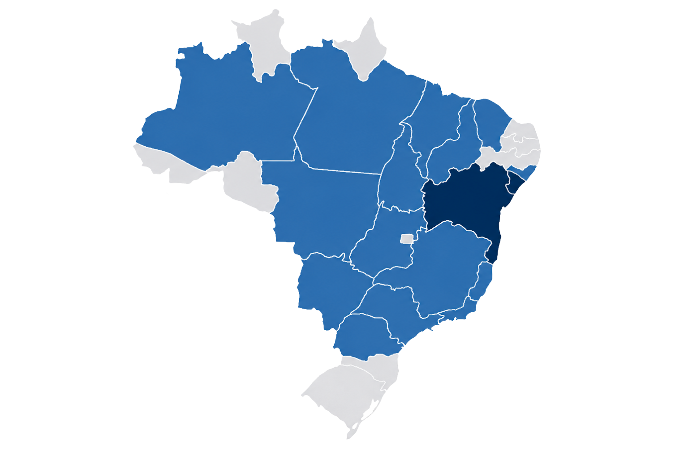
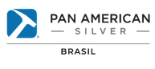
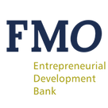
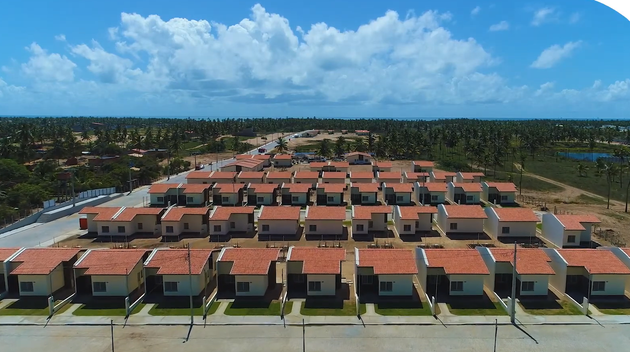
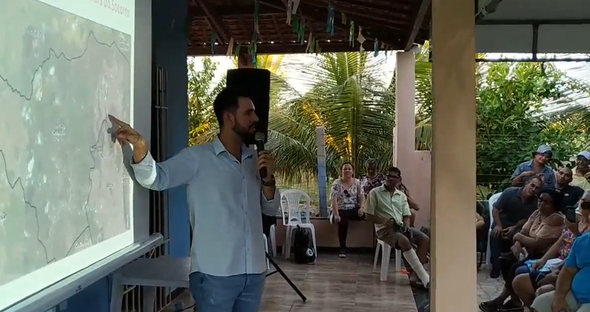
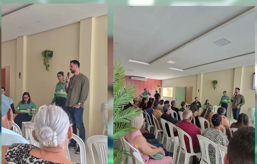

Missão
Implementar estratégias e soluções ESG, promovendo desempenho socioambiental, geração de impactos positivos nos territórios e fortalecimento da responsabilidade das empresas, em alinhamento às melhores práticas internacionais.
DMS – Desempenho Socioambiental atua na estruturação e implementação de soluções socioambientais para grandes projetos de infraestrutura, com foco em gestão de riscos, leitura territorial, desempenho social e aderência às melhores práticas internacionais de sustentabilidade.
Apoiamos clientes estratégicos na gestão e mitigação de impactos socioambientais, em conformidade com requisitos das Instituições Financeiras Internacionais, combinando consistência técnica e presença em campo para fortalecer a tomada de decisão e ampliar a previsibilidade dos projetos nos territórios.
Implementar estratégias e soluções ESG, promovendo desempenho socioambiental, geração de impactos positivos nos territórios e fortalecimento da responsabilidade das empresas, em alinhamento às melhores práticas internacionais.
Ser referência em gestão e desempenho socioambiental, atuando em projetos estratégicos, contribuindo para a mitigação de impactos adversos e para o desenvolvimento sustentável dos territórios e das comunidades locais.

Nossa atuação
Presença estratégica no Nordeste
com escritórios em Sergipe e na BahiaParcerias internacionais em 6 países
ampliando nossa capacidade técnicaNossas soluções
Estruturamos processos de acesso à terra, negociação fundiária, reassentamento, restauração de meios de vida e leitura socioterritorial, com foco em redução de riscos, participação social e viabilidade dos projetos.
Principais serviços
Apoiamos empresas na identificação, avaliação e gestão de riscos e impactos socioambientais, no fortalecimento da governança ESG e na estruturação de sistemas, planos e processos alinhados a requisitos legais, corporativos e internacionais.
Principais serviços
Integramos biodiversidade, serviços ecossistêmicos e agenda climática à gestão de projetos, apoiando estratégias de conservação, soluções baseadas na natureza, carbono e adaptação climática.
Principais serviços

Padrões internacionais
Atuamos em alinhamento com padrões socioambientais e ESG exigidos por Instituições Financeiras Internacionais, apoiando clientes na liberação de financiamentos, aplicação de salvaguardas e estruturação de instrumentos técnicos como ESAP e ESMS.


Padrões de desempenho IFC
Setores de atuação
PAR, FRAP, estudos socioeconômicos, PRMS, PDS, engajamento, gestão fundiária e auditorias PD5.
Due diligence ESG, ESAP, ESMS, biodiversidade, impactos cumulativos, reintegração de posse e famílias deslocadas.
Auditorias ESG, projetos de carbono, PBA, monitoramento socioambiental, direitos humanos e gestão fundiária.
Reassentamento, diagnóstico socioeconômico, engajamento, comunicação social e gestão de crise.
Projetos e relações estratégicas
Um recorte de relações institucionais e projetos que demonstram experiência em mineração, infraestrutura, papel e celulose, energia, reassentamento e padrões internacionais.


Projetos complexos exigem leitura técnica, presença em território e decisões bem documentadas.
Discutir um projeto


Experiências em campo
A DMS conduz planos de reassentamento, consultas informadas, participação social e negociação coletiva com comunidades, proprietários e demais partes interessadas.
Conversar com especialista